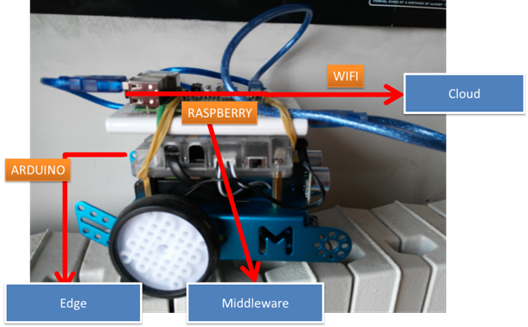
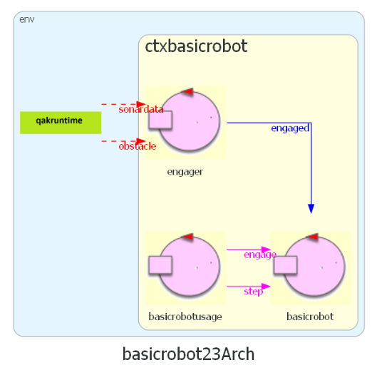

BasicRobot23¶
Obiettivo: introdurre un componente software che esegue comandi di spostamento di un DDR-robot in ‘modo indipendente dalla tecnologia’ con cui è realizzato del robot (virtuale o reale).
requisito tipidirobot¶
Facciamo riferimento ad almeno tre diversi tipi di robot:

Una prima architettura¶
Si delinea una architettura come quella raffiguata:

BasicRobot23: configurazione¶
La utility class unibo.robot.robotSupport.kt si occupa dei dettagli tecnologici specifici di ogni
tipo di robot utilizzando un supporto diverso per ciascun tipo.
BasicRobot23: supporti¶

|
per il VirtualRobot: virtualrobotSupport |

|
per il NanoRobot: nanoSupport, motors |
|  | per Mbot: mbotSupport |
{kind=link}
File di configurazione¶
Il file di configurazione è impostato su frasi JSon, come ad esempio il seguente
basicrobotConfig.json:
{"type":"virtual","port":"8090","ipvirtualrobot":"..."}
{"type":"realnano","port":"8020","ipvirtualrobot":"dontcare"}
//Arduino connesso al Raspberry:
{"type":"realmbot", "port":"/dev/ttyUSB0", "ipvirtualrobot":"-"}
//Arduino connesso al PC:
{"type":"realmbot","port":"COM6","ipvirtualrobot":"dontcare"}
basicrobot23 model¶
|  |
Supporti:
|
{kind=link}

|
|
Si veda il progetto unibo.basicrobot23, che fornisce il modello eseguibile basicrobot.qak.
Uso del planner¶
Il robot (virtuale o reale) viene considerato un oggetto inscrivibile in un cerchio di raggio R.
Muovere il robot con mossa step(T) con tempo T tale da spostare il robot (con velocità prefissata)
di uno spazio R, permette di costruire una mappa della stanza formata da celle quadrate RxR.
Ad esempio:
0 1 2 3 4 5 6 7 .... x
0 |r, 1, 1, 1, 1, 1, 1, X,
1 |1, 1, 1, 1, X, X, 1, X,
2 |1, 1, X, 1, X, X, 1, X,
3 |1, 1, X, 1, 1, 1, 1, X,
4 |1, 1, 1, 1, 1, 1, 1, X,
5 |X, X, X, X, X, X, X, X,
.
y
RobotPos=(0,0) direction=downDir
0 denoita una cella mai percorsa
1 denota una cella libreria
X denota una cella occupata da un ostacolo
r denota la posizione corrente del robot
L’uso di un planner come quello fornito in unibo.planner23-1.0.jar permette di
calcolare una sequenza delle mosse con cui il robot può muoversi dalla posizione corrente r
a un’altra posizione sulla mappa.
Si veda il progetto unibo.planner23, che fornisce la classe Planner23Util e l’esempio di uso MainPlannerdemo.
TODO map
map) creare la mappa della stanza vuota
TODO position
position) posizionare il robot al centro della stanza